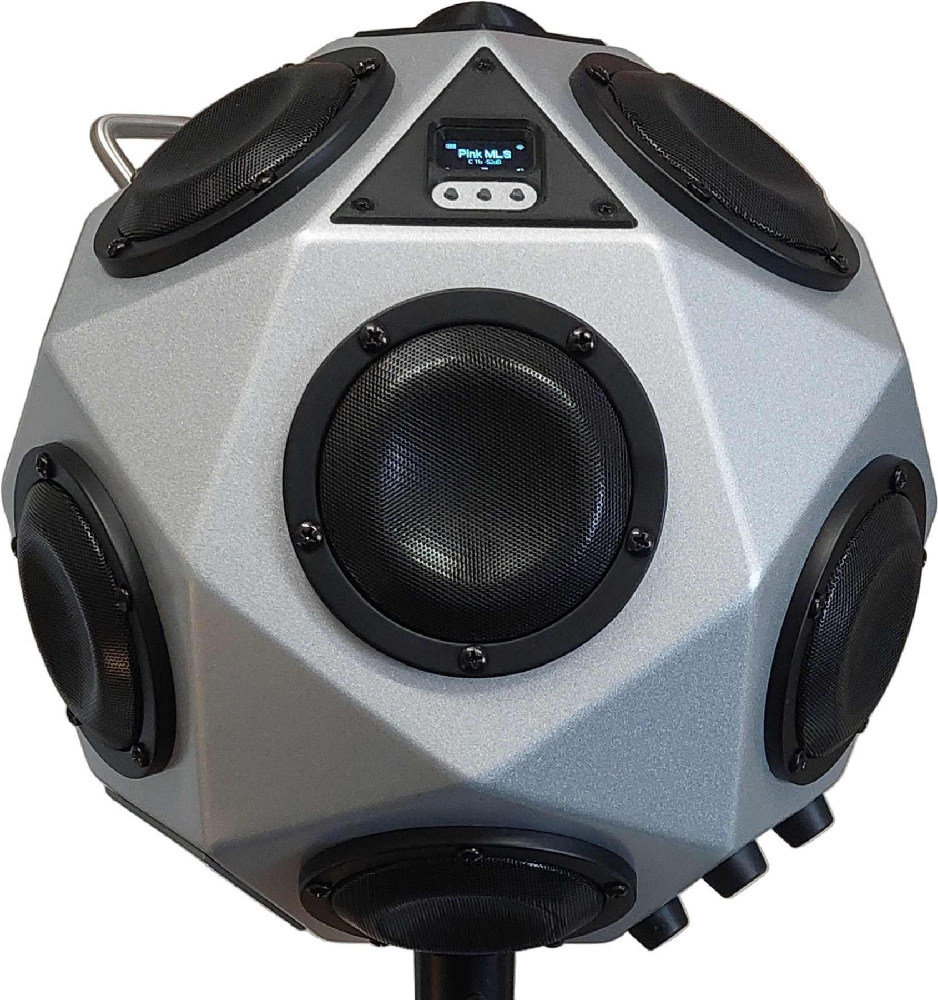
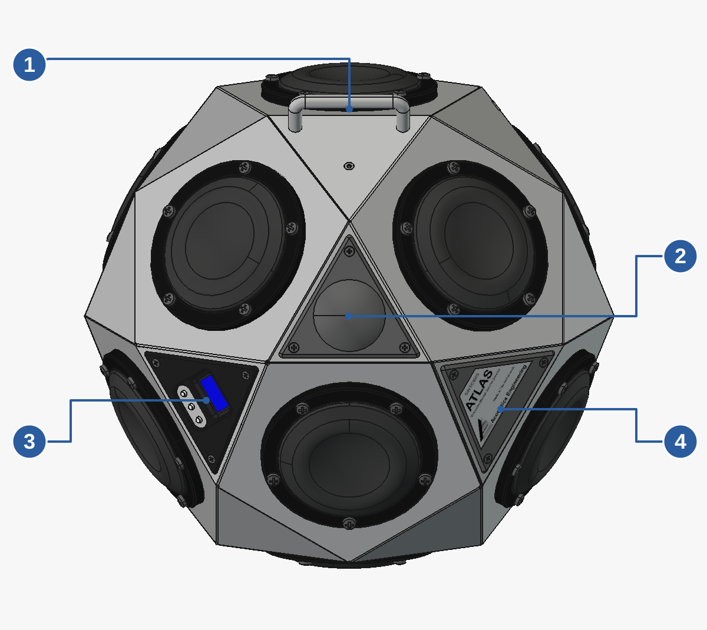
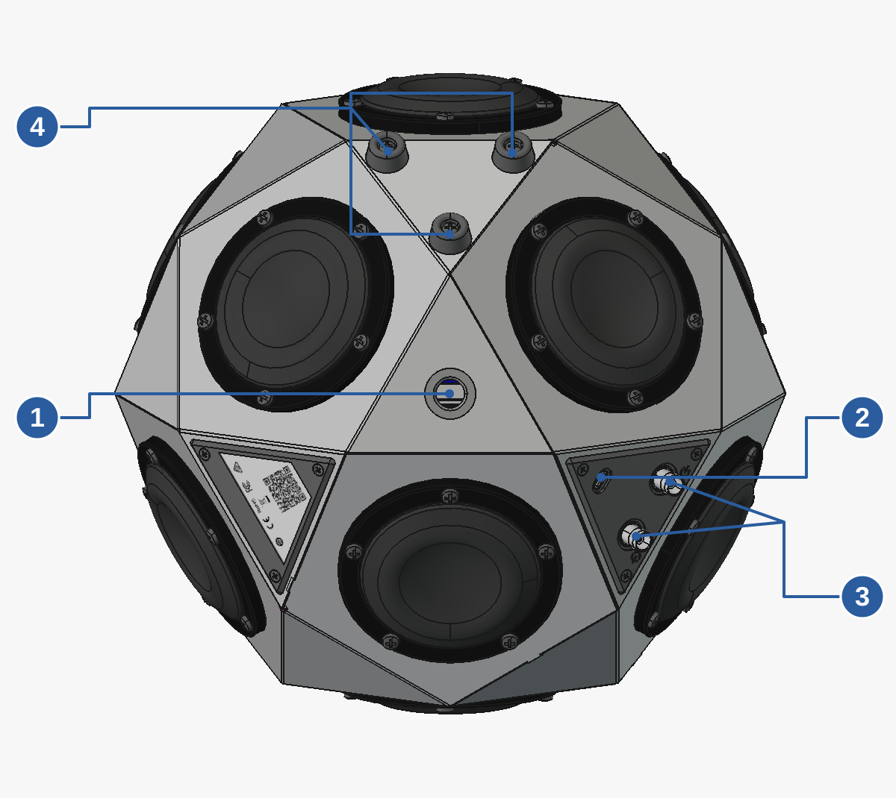

Atlas
Atlas is a portable omnidirectional source for room and building acoustics.
Atlas can be used with DIRAC Field or the desktop version of DIRAC acoustics measurement software.

On this page
Main functions
- Built-in signals for room and building acoustics
- User signal playback
- BNC line input and output support
- Wi-Fi remote control using DIRAC Field
Top view


Handle
The carrying handle is located on the upper part of Atlas.Wi-Fi antenna cover
The central cover houses the Wi-Fi antenna used for remote control.Display and three buttons
The OLED display and the L, M and R buttons provide local operation.Nameplate
The nameplate identifies Atlas.
Control panel
The three buttons are arranged below the display. Their current functions are indicated by the icons above them.
| Button | Function |
|---|---|
| Left | Signal setup on the home page; decrease gain during playback. |
| Middle | Menu on the home page; stop playback and return home during playback. |
| Right | Start playback on the home page; increase gain during playback. |
Display

The home page shows the battery state (upper left), Wifi state (upper right), selected signal (center), and icons for the three buttons.
In this example, the battery is partially charged with a charger attached. The + sign indicates the charger can deliver at least 45 Watts of power.
Also in this example, the selected signal is a continuous (C) PMLS-RA signal with a length of 5.5 seconds at a gain of -30 dB.
Bottom view and connections


Tripod mounting hole
The bottom has a 1/4-inch UNC threaded hole for a compatible tripod mount.USB-C connector
Connects the external power supply. See power limits and warnings for USB supply requirements.BNC connectors
Line-level input and output. Callout 3 identifies the pair; use the markings on Atlas to distinguish input from output. For output routing, see System Menu: Output.Three rubber feet
The feet support Atlas when it is placed on a surface rather than mounted on a tripod.